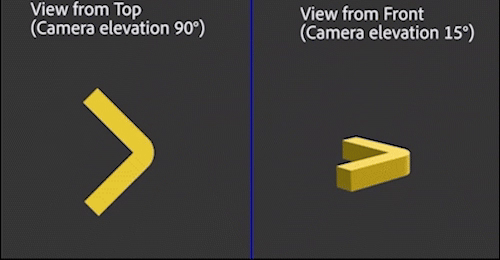

Slant Illusion
08/05/2024

A rigid object with two limbs at a right angle is rotating on the ground. The length of the limb passing through the line of sight is lengthened and then shortened, as shown in the view from the top. Here, the length of the stick is modulated to equate the perceived length when it is viewed from 15 degrees camera elevation, according to the result from the size matching experiment. Instead of seeing the physical length changes, each limb seems to bounce up and down when it faces towards or away from the observer, because the slant illusion dominates the percept. This is consistent with our result that an object with a longer length is perceived as slanted down or up.